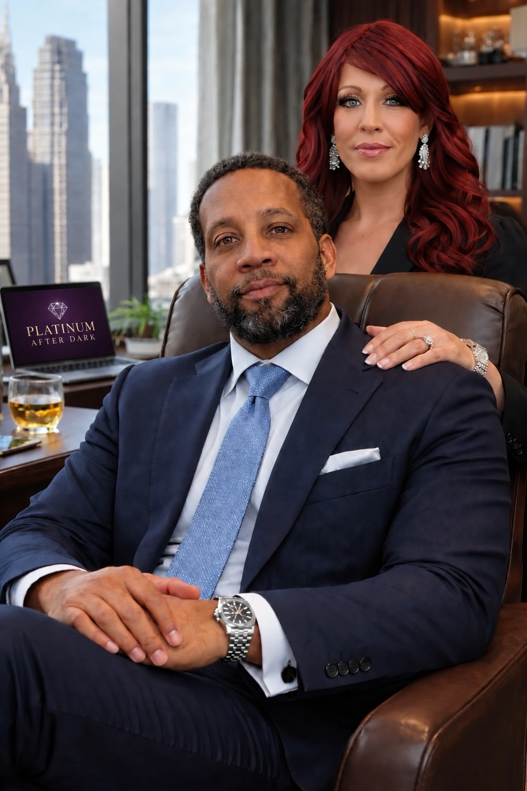

A French Port. A Lasting Memory.
A pressed sandwich, fries tucked inside, and the feeling of a meal carried through a port city. This memory inspired the Toulon Smash concept.
Our story
Inspired by miles traveled, not recipes copied. Places, people, and remembered meals become the starting points for original ideas.
Where it begins
For founder Aamil Haleem, food memories are part of the journey. A Navy port visit to Toulon, France. The smoke and warm spice remembered from Middle Eastern markets. A mushroom pasta dish in Civitavecchia, Italy.
Ascend Flavor Labs gives those memories a place to develop. We explore what made an experience memorable, then work toward an original interpretation. The aim is to carry the inspiration forward, with room for curiosity and experimentation.
Places remembered
A pressed sandwich, fries tucked inside, and the feeling of a meal carried through a port city. This memory inspired the Toulon Smash concept.
Market aromas, warm spices, sweetness, and grilled food helped shape the inspiration behind Desert Ember.
A remembered mushroom pasta dish remains a research starting point. The memory guides the exploration; the exact flavor is still being investigated.
Our philosophy
Heat supports flavor. It does not replace it. We consider the first taste, the middle of the palate, and the finish, giving each ingredient a purpose in the experience.
Explore signature flavors
Meet the founder
Founder · Ascend Flavor Labs
Aamil’s approach to flavor begins with the places he has been and the meals he still remembers. His U.S. Navy travels introduced him to food experiences that would become starting points for original culinary ideas.
A pressed sandwich in Toulon, France. The smoke and warm spice of Middle Eastern markets. A mushroom pasta dish remembered from Italy. Those moments helped shape the idea behind Ascend Flavor Labs: a passport told through flavor.
Today, he brings those memories into a process of testing, tasting, documenting, and refining. The goal is to develop original interpretations with depth, character, and a clear sense of inspiration.
Layers of flavor before heat.Explore the flavor collection